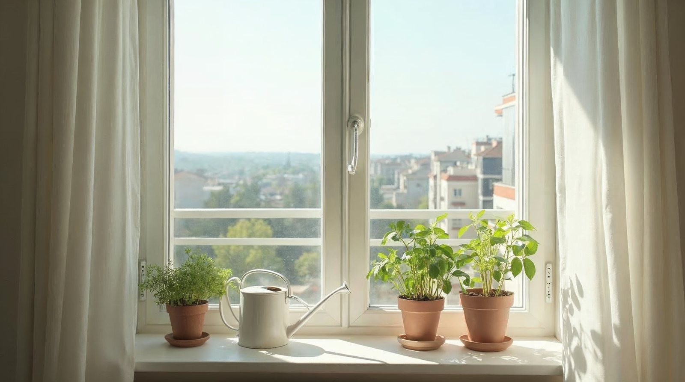
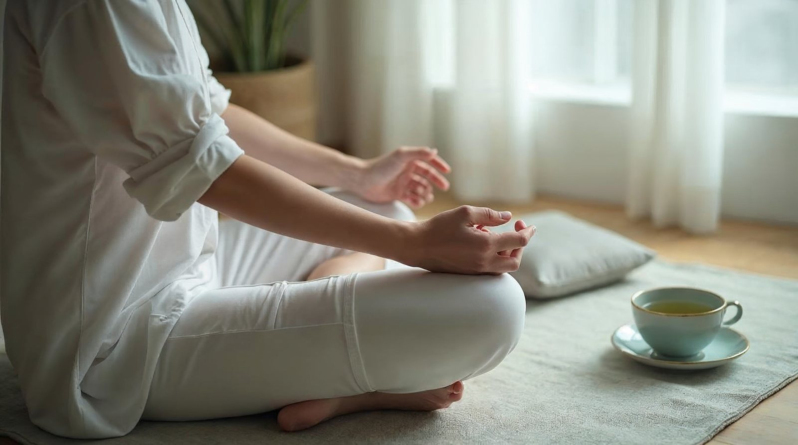

이종호 한의사 감수좋은꿈참사랑한의원 대표원장 (한의사 면허번호 19769)발행 2026-11-24 · 수정 2026-11-27
이 글의 차례
- 왜 이런 불편이 생길 수 있나요
- 왜 쉬는데도 더 지치는 느낌이 들까요
- 비슷해 보여도 살필 점이 조금씩 다릅니다
- 먼저 이렇게 여쭙니다
- 상황별 예시
- 스스로 점검해 보세요
- 일상에서 먼저 해 볼 수 있는 것
- 하루의 뼈대는 이렇게 세워 보세요
- 아침 햇볕과 걷기는 이렇게 시작해 보세요
- 낮잠은 이렇게 조절해 보세요
- 밤잠은 이렇게 다시 잡아 보세요
- 사람과 이어지는 시간을 만들어 보세요
- 식사는 이렇게 챙겨 보세요
- 손을 쓰는 일을 하나 만들어 보세요
- 가족은 이렇게 도와주실 수 있습니다
- 계절에 따라 일과를 바꿔 보세요
- 한의원에서 함께 살필 수 있는 경우
- 얼마나 지켜보고 언제 상담할까요
- 이렇게 기록해 오시면 상담이 쉬워집니다
- 이런 증상은 먼저 확인이 필요합니다
은퇴 뒤 하루가 길게 느껴지고 무기력하다면, 일어나는 시간을 정하고 하루 한 가지라도 밖에서 하는 일정을 만드는 것처럼 작은 일과부터 다시 세워 보시길 권합니다. 오래 다니던 직장을 그만두고 처음 몇 달은 쉬어서 좋다가, 어느 순간 낮에 누워 있는 시간이 늘고 밤잠까지 얕아졌다는 분이 많습니다.
수십 년 동안 아침마다 정해진 곳으로 나서던 몸은 그 리듬에 익숙해져 있습니다. 그 리듬이 하루아침에 사라지면 몸과 마음이 어디에 기대야 할지 몰라 헤매는 것이 자연스러운 일입니다. 게을러서가 아니라, 새 리듬을 만드는 데 시간이 필요한 것입니다.
왜 이런 불편이 생길 수 있나요
- 출근처럼 정해진 일정이 사라지면 일어나고 먹고 자는 시간이 흐트러지기 쉽습니다.
- 낮에 누워 있는 시간이 길면 밤잠이 얕아지고, 다음 날 더 무기력해지는 흐름이 생기기 쉽습니다.
- 사람을 만나고 대화하는 시간이 줄면 기분이 가라앉기 쉽습니다.
- 입맛과 활동량이 함께 줄면 기력도 떨어집니다.
왜 쉬는데도 더 지치는 느낌이 들까요
몸은 움직인 만큼 밤에 쉬고, 쉰 만큼 낮에 움직일 힘을 얻습니다. 낮에 거의 움직이지 않으면 밤에 깊이 잠들 이유가 줄어들고, 얕은 잠을 자고 일어난 아침은 개운하지 않아 다시 눕고 싶어집니다.
햇볕을 쬐는 시간이 줄어드는 것도 영향을 줍니다. 아침 햇볕은 몸에 '하루가 시작되었다'는 신호를 보내 밤잠의 시각을 잡아 주는데, 집 안에서만 지내면 이 신호가 약해져 낮과 밤의 구분이 흐려지기 쉽습니다.
여기에 '내가 할 일이 없다'는 허전함이 겹치면 몸을 일으킬 이유도 줄어듭니다. 그래서 은퇴 뒤의 무기력은 몸의 피로와 마음의 허전함이 함께 맞물려 있는 경우가 많습니다.
비슷해 보여도 살필 점이 조금씩 다릅니다
- 아침에는 괜찮다가 오후로 갈수록 축 처지는 경우에는 점심 식사와 낮잠, 오후 활동을 자세히 여쭙습니다.
- 잠은 많이 자는데도 늘 졸리고 개운하지 않은 경우에는 밤잠의 질과 코골이, 자다 깨는 횟수를 함께 봅니다.
- 몸보다 마음이 가라앉아 좋아하던 일에도 흥미가 없어진 경우에는 기분의 흐름을 더 조심스럽게 여쭙습니다.
- 무릎이나 허리가 불편해 밖에 나가기 싫어진 경우에는 통증 때문에 활동이 줄어든 것은 아닌지 함께 살핍니다.
- 소화가 잘 안 되고 입맛이 없는 경우에는 식사 시간과 양, 대변 습관을 이어서 여쭙습니다.

먼저 이렇게 여쭙니다
- 은퇴하신 지 얼마나 되셨나요?
- 하루 중 정해진 일정이 있나요? (산책, 모임, 운동 등)
- 잠드는 시간과 깨는 시간이 예전과 달라졌나요?
- 입맛이나 체중에 변화가 있나요?
- 요즘 사람을 만나거나 대화하는 시간이 얼마나 되나요?
- 낮에 누워 계시거나 텔레비전을 보는 시간은 얼마나 되나요?
- 무릎이나 허리처럼 움직일 때 불편한 곳이 있나요?
상황별 예시
- 예를 들어 은퇴 뒤 첫 겨울을 맞아 날이 추워지자 바깥 산책을 그만둔 경우, 하루 대부분을 거실에서 보내며 낮잠이 길어지고 밤에는 새벽에 깨기 쉽습니다. 추운 날에는 해가 가장 높은 정오 무렵에 짧게라도 나가 보시고, 실내에서는 아파트 복도나 계단을 천천히 걷는 것도 방법입니다.
- 예를 들어 배우자는 여전히 일을 하고 혼자 집에 계시는 시간이 긴 경우, 끼니를 대충 때우고 대화 없이 하루가 지나가기도 합니다. 점심 약속을 일주일에 한두 번 잡거나, 장보기처럼 집 밖에 나갈 일을 일부러 만들어 보세요.
- 예를 들어 은퇴 직후 의욕적으로 여러 강좌를 신청했다가 몇 주 만에 지쳐 모두 그만둔 경우, 다시 시작하기가 더 망설여질 수 있습니다. 한 번에 많이 하기보다 일주일에 한 가지, 부담 없는 일부터 다시 시작해 보시길 권합니다.
- 예를 들어 손주를 돌보는 날과 아무 일정 없는 날이 섞여 있는 경우, 바쁜 날은 지치고 빈 날은 축 처지는 흐름이 반복되기도 합니다. 일정이 없는 날에도 일어나는 시각과 식사 시각만큼은 바쁜 날과 같게 맞춰 보세요.
- 예를 들어 은퇴 뒤 술자리가 줄었다가 집에서 혼자 반주를 하는 날이 늘어난 경우, 술기운에 일찍 잠들었다가 새벽에 깨는 일이 잦아지기도 합니다. 저녁 반주는 횟수를 정해 줄여 보시고, 밤잠이 어떻게 달라지는지 기록해 보세요.
스스로 점검해 보세요
- 일어나는 시각이 날마다 한 시간 넘게 달라진다
- 낮에 누워 있는 시간이 두 시간을 넘는 날이 많다
- 일주일 동안 집 밖에 나간 날이 사흘이 안 된다
- 가족 말고 다른 사람과 이야기를 나눈 지 일주일이 넘었다
- 끼니를 거르거나 대충 때우는 날이 많다
- 예전에 즐기던 일을 해 보려 해도 손이 가지 않는다
- 밤에 자다 깨면 다시 잠들기까지 한참 걸린다
- 저녁마다 혼자 반주를 하는 날이 늘었다
해당하는 항목이 많다면 일어나는 시각과 하루 한 가지 바깥 일정부터 다시 세워 볼 신호입니다.

일상에서 먼저 해 볼 수 있는 것
- 아침에 일어나는 시간을 정하고 지키기
- 하루 한 가지라도 밖에서 하는 일정 만들기(산책, 장보기, 동네 프로그램 등)
- 가족이나 친구와 정해진 요일에 통화하기
- 낮에 누워 있는 시간을 조금씩 줄이기
- 하루 세 끼 시간을 정해 같은 시각에 먹기
하루의 뼈대는 이렇게 세워 보세요
하루를 처음부터 빽빽하게 채울 필요는 없습니다. 일어나는 시각, 세 끼 먹는 시각, 잠자리에 드는 시각만 먼저 정해도 하루에 뼈대가 생깁니다. 그 뼈대 사이에 작은 일정을 하나씩 끼워 넣으면 됩니다.
오전에는 몸을 움직이는 일, 오후에는 사람을 만나거나 손을 쓰는 일처럼 시간대별로 성격을 나눠 보세요. 오전에 동네를 한 바퀴 걷고, 오후에 도서관이나 경로당에 들르는 식으로 단순하게 시작하시면 됩니다.
달력이나 수첩에 그날 한 일을 한 줄씩 적어 보시길 권합니다. 직장에서 업무 일지를 쓰셨던 분이라면 익숙하실 겁니다. 적어 두면 '오늘 아무것도 안 했다'는 허전함이 조금 줄어듭니다.
아침 햇볕과 걷기는 이렇게 시작해 보세요
일어나서 한 시간 안에 커튼을 열고 창가에서 햇볕을 쬐거나, 집 앞을 10분이라도 걸어 보세요. 아침 햇볕은 밤잠의 시각을 잡아 주는 데 도움이 됩니다.
걷기는 처음부터 오래 하기보다 하루 15~20분에서 시작해 몸이 익숙해지면 조금씩 늘려 보세요. 동네 공원이나 평지 산책로처럼 쉬어 갈 벤치가 있는 길을 고르면 부담이 덜합니다.
혼자 걷기가 심심하다면 같은 시간에 걷는 이웃과 인사를 나누거나, 동네 걷기 모임에 함께해 보세요. 매일 같은 길에서 마주치는 얼굴이 생기면 나가는 일이 한결 즐거워집니다.
낮잠은 이렇게 조절해 보세요
점심을 먹고 졸음이 오는 것은 자연스러운 일입니다. 다만 소파에 누워 텔레비전을 켜 둔 채 한두 시간씩 자면 밤잠이 얕아지기 쉽습니다.
낮잠은 오후 3시 이전에 20~30분 정도로 짧게 자 보세요. 침대보다 의자에 기대어 눈을 붙이면 깊이 빠져들지 않아 일어나기가 쉽습니다. 알람을 맞춰 두는 것도 방법입니다.
밤잠은 이렇게 다시 잡아 보세요
일찍 잠자리에 들면 잠이 더 잘 올 것 같지만, 졸리지 않은데 누워 있으면 오히려 뒤척이는 시간만 길어집니다. 졸음이 올 때 잠자리에 들고, 아침에는 정해 둔 시각에 일어나는 쪽이 밤잠을 되찾는 데 도움이 됩니다.
저녁 식사 뒤에는 텔레비전 소리를 조금 줄이고 조명을 낮춰 보세요. 따뜻한 물로 발을 씻거나 가볍게 몸을 풀면 몸이 잠들 준비를 하기 쉽습니다.
새벽에 깨어 다시 잠이 오지 않을 때 시계를 자꾸 보면 마음이 조급해집니다. 시계는 보이지 않는 곳에 두고, 30분 넘게 잠이 오지 않으면 잠시 일어나 조용히 앉아 있다가 다시 누워 보세요.
사람과 이어지는 시간을 만들어 보세요
직장에 다닐 때는 굳이 애쓰지 않아도 매일 누군가와 이야기를 나눴습니다. 은퇴 뒤에는 그런 만남이 저절로 생기지 않아 일부러 만들어야 합니다.
정해진 요일에 친구나 형제와 통화하기, 옛 동료와 한 달에 한 번 점심 먹기처럼 반복되는 약속을 정해 보세요. 동주민센터나 복지관의 프로그램, 동네 도서관 강좌, 봉사 활동도 새로운 사람을 만나는 자리가 됩니다.
오래 일하며 쌓은 경험을 나눌 수 있는 자리를 찾아보시는 것도 좋습니다. 누군가에게 도움이 된다는 느낌은 하루를 일으키는 힘이 되기도 합니다.
식사는 이렇게 챙겨 보세요
혼자 드시는 끼니가 늘면 밥에 김치 하나로 대충 때우거나 한 끼를 건너뛰기 쉽습니다. 단백질과 채소가 부족하면 기력이 더 떨어지고, 그만큼 움직이기 싫어지는 흐름이 생깁니다.
달걀, 두부, 생선, 살코기 가운데 하나를 매 끼니 곁들이고, 데치기만 하면 되는 채소를 사 두세요. 반찬을 한 번에 넉넉히 만들어 나눠 두면 끼니를 챙기기가 훨씬 수월합니다.
손을 쓰는 일을 하나 만들어 보세요
텔레비전을 보는 시간은 몸도 머리도 거의 쓰지 않아 시간이 지나도 개운함이 남지 않습니다. 반대로 화분을 가꾸거나, 요리를 하거나, 오래된 사진을 정리하는 일처럼 손을 쓰는 일은 끝내고 나면 작은 뿌듯함이 남습니다.
직장에 다니느라 미뤄 두었던 일을 적어 보세요. 배우고 싶던 악기, 써 보고 싶던 글, 정리하지 못한 책장처럼 작은 것이라도 괜찮습니다. 하루에 30분씩만 시간을 내도 그 일이 하루의 기둥이 되어 줍니다.
가족은 이렇게 도와주실 수 있습니다
은퇴하신 분이 무기력해 보이면 가족은 "왜 집에만 있느냐", "뭐라도 좀 하시라"는 말을 하게 되기 쉽습니다. 걱정에서 나온 말이지만, 듣는 분에게는 오히려 부담이 되어 더 움츠러들게 만들기도 합니다.
다그치기보다 "같이 산책 갈래요?", "주말에 시장 같이 가요"처럼 함께할 일을 제안해 보세요. 정해진 요일에 전화를 드리거나, 작은 부탁을 드려 할 일을 만들어 드리는 것도 도움이 됩니다.
평소와 달리 잠이 크게 줄었거나, 말수가 눈에 띄게 줄었거나, 좋아하던 일에 손을 놓으신 모습이 보인다면 진료 때 함께 오셔서 그 모습을 이야기해 주세요. 본인은 잘 알아차리지 못하는 변화를 가족이 먼저 보는 경우가 많습니다.
계절에 따라 일과를 바꿔 보세요
겨울에는 해가 짧고 날이 추워 바깥에 나가는 일이 줄어들기 쉽습니다. 이 시기에는 바깥 산책 시간을 해가 가장 따뜻한 정오 무렵으로 옮기고, 실내에서 할 수 있는 일정을 미리 정해 두세요.
봄과 가을에는 바깥 활동을 늘리기 좋은 때입니다. 동네 공원을 조금 더 멀리 걸어 보거나, 가까운 둘레길을 친구와 함께 다녀오는 것처럼 계절을 즐길 수 있는 일정을 넣어 보시길 권합니다.
한의원에서 함께 살필 수 있는 경우
- 무기력과 잠의 변화가 함께 이어지는 경우 생활 리듬과 몸의 기력을 함께 살핍니다.
- 입맛이 떨어지고 소화가 불편한 경우 식사와 소화 상태를 함께 살핍니다.
- 하루 대부분 집에 계시며 몸이 무거운 경우 맥을 먼저 짚고 바깥 일정 하나부터 함께 정합니다.
좋은꿈참사랑한의원에서는 모든 분께 맥부터 짚으며 하루를 어떻게 보내시는지와 잠, 식사, 기분의 변화를 자세히 여쭙고, 필요하면 설진·복진으로 기력과 소화 상태를 함께 살핍니다. 그 뒤 침이나 한약 상담, 생활 리듬 조정 등 그날 필요한 방법을 정합니다.
첫 방문 때는 맥을 짚은 뒤 앉고 서고 걷는 모습도 함께 봅니다. 무릎이나 허리가 불편해 밖에 나가기 꺼려지신다면 그 부분도 함께 살펴, 걷기를 다시 시작할 수 있는 방법을 찾아봅니다.
한약을 상담할 때는 지금 드시는 약을 모두 확인한 뒤에 판단합니다. 혈압약이나 당뇨약처럼 오래 드시는 약이 있다면 약 봉투나 처방전을 가져와 주세요. 다시 오시면 지난번 함께 정한 일과를 며칠이나 지키셨는지, 밤잠이 어떻게 달라졌는지부터 이어서 여쭙습니다.
얼마나 지켜보고 언제 상담할까요
- 일어나는 시각과 하루 한 가지 바깥 일정을 정한 뒤 2~3주 정도 하루 일과와 잠을 적으며 지켜보세요.
- 일과를 세워 보아도 몸을 일으키기가 계속 힘들거나, 밤잠이 얕은 날이 이어진다면 상담을 권합니다.
- 기록을 보며 밖에 나간 날과 밤잠이 깊었던 날이 겹치는지 살펴보세요. 무엇이 하루를 가볍게 했는지 알면 그 일을 조금씩 늘려 갈 수 있습니다.
- 처음 몇 주는 일과를 다 지키지 못해도 괜찮습니다. 지킨 날이 조금씩 늘어나는 흐름을 보시면 됩니다.
이렇게 기록해 오시면 상담이 쉬워집니다
- 하루 일과(일어난 시각, 외출, 낮에 누워 있던 시간)
- 잠든 시각과 밤에 깬 횟수
- 입맛과 체중의 변화
- 드시는 약 전체
- 일주일 동안 만나거나 통화한 사람과 횟수
- 걸은 날과 걸은 시간
- 낮잠을 잔 시각과 길이
- 그날 기분을 한 단어로 적은 메모
이런 증상은 먼저 확인이 필요합니다
- 스스로를 해칠 생각이 들면 ☎ 109로 바로 연락하세요.
- 체중이 눈에 띄게 줄거나 식사를 거의 못 하시는 경우
이런 신호가 있으면 한의원보다 가까운 병원이나 응급실을 먼저 찾으세요.

여쭙는 것
- 은퇴하신 지 얼마나 되셨나요?
- 하루 중 정해진 일정이 있나요? (산책, 모임, 운동 등)
- 잠드는 시간과 깨는 시간이 예전과 달라졌나요?
생활에서 해 볼 것
- 아침에 일어나는 시간을 정하고 지키기
- 하루 한 가지라도 밖에서 하는 일정 만들기(산책, 장보기, 동네 프로그램 등)
- 가족이나 친구와 정해진 요일에 통화하기
한의원에서 함께 살필 것
- 무기력과 잠의 변화가 함께 이어지는 경우 생활 리듬과 몸의 기력을 함께 살핍니다.
- 입맛이 떨어지고 소화가 불편한 경우 식사와 소화 상태를 함께 살핍니다.
- 하루 대부분 집에 계시며 몸이 무거운 경우 맥을 먼저 짚고 바깥 일정 하나부터 함께…
먼저 확인이 필요한 신호
- 스스로를 해칠 생각이 들면 109로 바로 연락하세요.
- 체중이 눈에 띄게 줄거나 식사를 거의 못 하시는 경우
한눈에 보는 표
| 구분 | 핵심 |
|---|---|
| 여쭙는 것 | 은퇴하신 지 얼마나 되셨나요? 하루 중 정해진 일정이 있나요? (산책, 모임, 운동 등) |
| 생활에서 해 볼 것 | 아침에 일어나는 시간을 정하고 지키기 하루 한 가지라도 밖에서 하는 일정 만들기(산책, 장보기, 동네 프로그램 등) |
| 한의원에서 함께 살필 것 | 무기력과 잠의 변화가 함께 이어지는 경우 생활 리듬과 몸의 기력을 함께 살핍니다. 입맛이 떨어지고 소화가 불편한 경우 식사와 소화 상태를 함께 살핍니다. |
| 먼저 확인이 필요한 신호 | 스스로를 해칠 생각이 들면 109로 바로 연락하세요. 체중이 눈에 띄게 줄거나 식사를 거의 못 하시는 경우 |
자주 묻는 질문
나이 들면 원래 기운이 없는 것 아닌가요?
나이 탓으로만 넘기기보다 잠과 식사, 하루의 리듬을 함께 살펴보는 것이 좋습니다.
가족이 함께 와도 되나요?
네, 가족분이 평소 모습을 함께 이야기해 주시면 도움이 됩니다.
동네에서 참여할 수 있는 활동은 어떻게 찾나요?
동주민센터나 구청 안내를 확인해 보시면 어르신 대상 프로그램 정보를 얻을 수 있습니다. 진료 때 하루 일과를 함께 정리해 드립니다.
낮잠은 아예 자지 않아야 하나요?
오후 이른 시간에 짧게 자는 정도는 괜찮은 경우가 많지만, 길게 누워 있는 시간이 늘면 밤잠이 얕아질 수 있습니다.
은퇴하고 몇 달 지나면 저절로 괜찮아지지 않나요?
시간이 지나며 새 리듬을 찾는 분도 많습니다. 다만 무기력과 얕은 잠이 몇 달째 이어진다면 하루 일과를 함께 살펴보시길 권합니다.
좋은꿈참사랑한의원은 재진 때 지난번 이야기부터 이어서 여쭙니다. 진료시간과 예약은 오시는 길에서 확인하세요.
어디서 상담받을 수 있나요?
좋은꿈참사랑한의원은 서울 동작구 만양로2길 2 신성빌딩 3층·5층(서울 동작구 상도동, 7호선 상도역 3번 출구 근처)에 있습니다. 한의사 3명(이종호 대표원장, 조영기 수석진료원장, 정원영 진료원장)이 진료합니다. 진료시간은 평일 09:30~20:00(점심 13:00~14:00), 토·일·공휴일 09:30~15:00이며, 방문 전 전화로 확인을 권합니다. 예약은 네이버 예약, 카카오톡 상담, 전화 02-815-7510로 받습니다.
이 글은 일반적인 건강 정보이며 개인의 진단이나 치료를 대신하지 않습니다. 증상이 있거나 복용 중인 약이 있다면 진료를 통해 확인하세요. 치료 효과는 개인마다 다를 수 있습니다.
작성 기준: 일반적으로 알려져 있는 건강 정보를 참고해 정리했습니다(대표원장 감수). 증상 기록은 1~2주 동안 하루 1회, 비슷한 시간에 적어 오시면 지난 상태와 비교하기 쉽습니다.